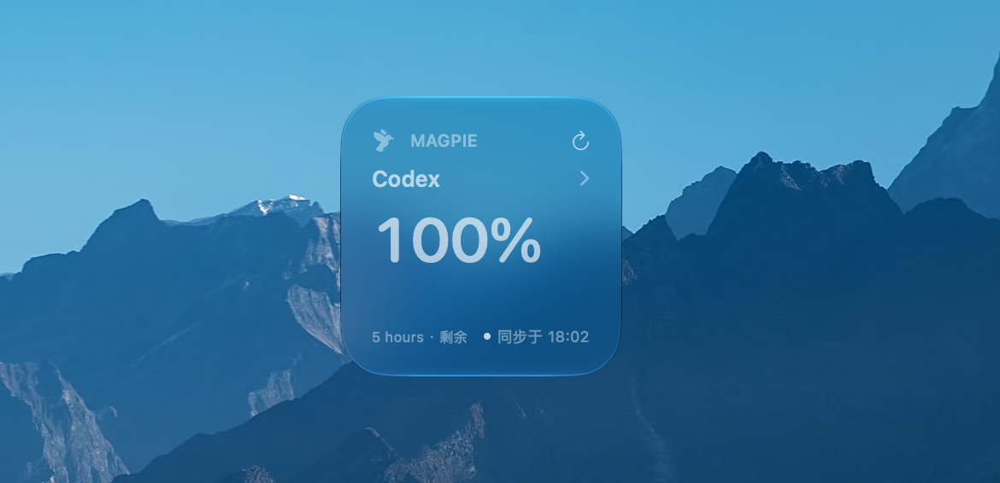
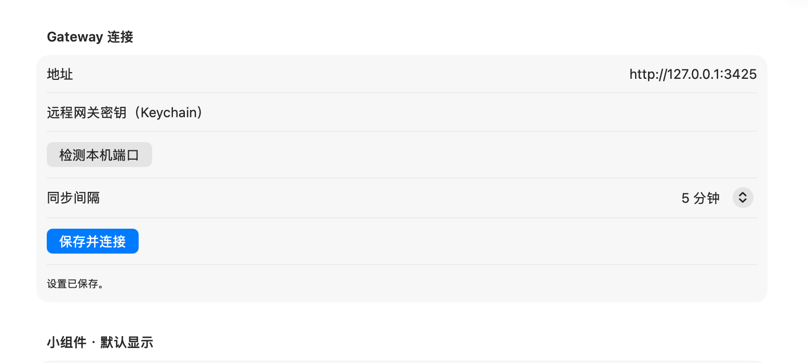

三种尺寸
小、中、大号都能加到桌面。小号点订阅名旁边的箭头，直接轮换要看的订阅。
Magpie Widget 只读连接本机 Magpie，把 Cursor、Codex、Grok 这些订阅的剩余额度做成 macOS 桌面小组件。

主应用负责去 Magpie 取数。桌面小组件只显示你留下的那一份快照，不改路由、账户或 Agent。
小、中、大号都能加到桌面。小号点订阅名旁边的箭头，直接轮换要看的订阅。
读取本机网关的额度、用量和请求。密钥留在钥匙串。不写入 Magpie 的配置。
订阅、指标、时间范围、费用、Token 和趋势图，都在主应用里开关。改完会请求刷新。
第一次打开会找本机 Magpie 的端口。地址、同步间隔和钥匙串里的密钥，都在这一页。
Gateway

WidgetKit 每天大约给 72 次刷新。小组件按这个上限，大约每 20 分钟读一次最新快照。
“打开桌面，
就知道还剩多少。”
SwiftUI、WidgetKit、App Intents。没有 Electron，也没有第三方运行时。它只做 Magpie 用量的桌面视图。
Magpie Widget 1.0.0 · macOS 14 及以上 · Apple 芯片与 Intel